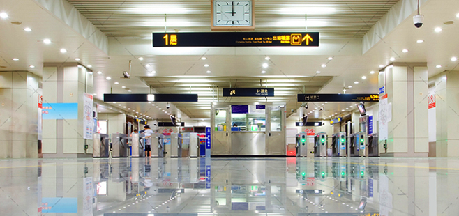

The challenge
Shanghai Metro has reached a daily traffic of 8 million and a total annual time of more than 5 million hours for passengers transfering between lines. Shanghai Metro Company asked us to smooth their transference and improve their subway experience through design.
We first looked into whole visual process of route-direction in the complex and crowded spaces, to find the starting points for with minimal construction work involved.
Research: a spatial layout recall test & an eye-tracking experiment
The recall test tries to identify the determinant factors of self-navigation in a familiar environment. We interviewed 43 random passengers starting with asking about the metro station they are most familiar with:
1. “Please describe the spatial layout of the station.”
2. “Where in the station do you usually choose to meet friend at?”
By keyword analysis, their answers tell what elements are easy to recognize as well as to describe to others.
Then the eye-tracking experiment turned to unfamiliar environments. Respondents are given two groups of images showing the station with and without heavy crowds. The items and areas in the image were tagged with attributes including: Visible Size / Visual impact / Shape / Pattern complexity / Contrast level with environment. Analysis of Eye-tracking heat-map and flow-chart statistics showed the features’ correlations with way-finding efficiency.


Design guidelines from the research
It was concluded that most effective visual elements are eye-catching decorations with clear-edge and recognizable-shape as well as unique space structures. Besides design features, follow-the-crowd is a phenomenon worthy of designers’ notice. What's more, when led by our researcher, 54.55% of passengers followed him/ her to the wrong direction. These are the start points of our design solution development.
My Design Solutions
The core attribute of my design proposal is lighting realized by laser projection. In my solution, lighting environment distinguish different lines (to guide transference even from far), show distance to the exit (to help passengers judge roughly on directions), highlight and encourage human-human interactions.
The laser projection solution is COOL, which is my primary intention. The sensuous experience is particularly important since passengers constantly complain the dim and crowded underground space keeps reminding them they are losers in life. "I take subway because I cannot afford a car." This cool, dreamy and delightful lighting solution is to change their feeling of failure.
Practically, lighting environment is more perceptible than any tangible decorations, especially in crowded space, when people are unconsciously following the crowd, and when people are judging direction from a long distance.


Solution efficiency evaluation
The design concept was validated through experiments before developed for construction.
Criteria 1: Can passengers recognize the station through subway windows?
A metro station platform design is expected to make passengers aware which station they are in even when they are inside the trains through the window frame from a particular angle.
78% of respondents can address the station name with restricted vision.
Criteria 2: Does the leading passenger go toward the right direction?
The test result approves that the new design reduced “wrong direction” rate by 31.82% and shortened passengers’ hesitation duration by 5.6 seconds, which validated our design efficiency in not-crowded circumstance.
Efficiency test in crowded situation is hard to conduct before construction. However, because of the go-with-the-stream effect, the success in lead-passenger-guidance can to some extent guarantee the result.